New features: expansion, OOB, titles, margins, inheritance
Source:vignettes/new-features.Rmd
new-features.RmdThis vignette covers the cross-cutting feature batch that touches scales, axes, margins, and the Hi-C fetcher:
- Axis expansion now actually applies to element coordinates.
- New
oob = "exclude"/"perimeter"argument on every scale. -
aes(axis.x.line = NA)removes a piece of axis chrome, ggplot-style. - Axis titles auto-derive from the first element’s mapping.
- Genomic axes default each window’s title to its seqname.
- Manual title overrides via
axis.<side>.title.label/axis.<side>.title = aes(label = …, col = …). - New
pretty = list(...)argument forwards to basepretty(). -
seq_plot(windows = …)is inherited by tracks; genomic scales inherit windows from their enclosing track. - New
seq_plot(plot_margin = 0.02)outermost canvas margin. - New
seq_plot(highlight_margins = TRUE)development overlay. -
open_hic()$fetch()now accepts a multi-rangeregion; themax_fetch_bpdefault raised to 280 Mb.
We use a synthetic two-track example throughout. The data:
win <- GRanges("chr1", IRanges(start = 1, end = 1e6))
n <- 200
gr <- GRanges("chr1", IRanges(start = sample(1:1e6, n), width = 1))
mcols(gr)$xv <- runif(n, 0, 10)
mcols(gr)$score <- runif(n, 0, 6)
mcols(gr)$grp <- sample(letters[1:3], n, TRUE)1. Axis expansion (now wired through)
Previously, passing expand = c(0.1, 0) on a continuous
scale had no visible effect — the breaks were computed but the npc
transform that positions data on the panel used the raw data range. As
of this batch, expand is honoured end-to-end: the panel
carries an xplot_range / yplot_range that
includes the expansion, and elements map into it.
trk_noexp <- seq_track(
data = gr, windows = win,
mapping = map(x = xv, y = score),
scale_x = seq_scale_continuous(expand = c(0, 0)),
aesthetics = aes("axis.x.title.label" = "x (no expand)")
) %+% seq_point()
trk_exp <- seq_track(
data = gr, windows = win,
mapping = map(x = xv, y = score),
scale_x = seq_scale_continuous(expand = c(0.2, 0)),
aesthetics = aes("axis.x.title.label" = "x (20% expansion)")
) %+% seq_point()
(seq_plot() %+% trk_noexp %+% trk_exp)$plot()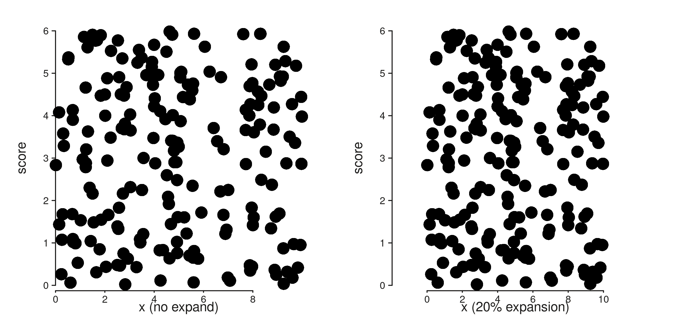
2. oob — out-of-bounds handling
The new oob argument controls what happens when data
falls outside the (expanded) axis range. "exclude"
(default) drops the rows and reports a count via message();
"perimeter" clamps them to the limit and reports.
# A subset whose x runs from -3 to 13 — three points sit outside [0, 10].
gr_off <- gr
mcols(gr_off)$xv <- jitter(c(-3, mcols(gr)$xv[2:(n-1)], 13), amount = 1)
trk_excl <- seq_track(
data = gr_off, windows = win,
mapping = map(x = xv, y = score),
scale_x = seq_scale_continuous(limits = c(0, 10), oob = "exclude"),
aesthetics = aes("axis.x.title.label" = "oob = exclude")
) %+% seq_point()
trk_per <- seq_track(
data = gr_off, windows = win,
mapping = map(x = xv, y = score),
scale_x = seq_scale_continuous(limits = c(0, 10), oob = "perimeter"),
aesthetics = aes("axis.x.title.label" = "oob = perimeter")
) %+% seq_point()
(seq_plot() %+% trk_excl %+% trk_per)$plot()
#> 4 out-of-bounds data points excluded! (seq_point)
#> 4 out-of-bounds data points plotted! (seq_point)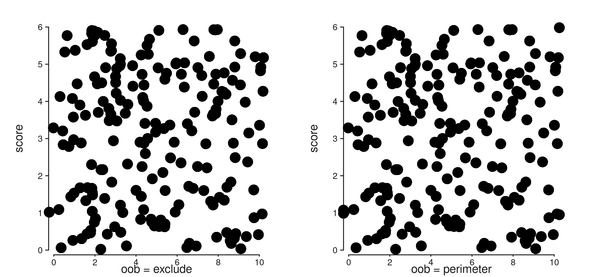
3. NA removes axis chrome
Setting any of the structural axis sub-keys (line,
title, ticks, labels,
text, gridline) to NA blanks that
piece — the same contract as ggplot’s element_blank().
Sides x / y (default both), x1 /
x2 / y1 / y2 (specific axis), and
the top-level axis.* (every axis) all work.
trk_full <- seq_track(
data = gr, windows = win,
mapping = map(x = xv, y = score)
) %+% seq_point()
trk_no_line_no_ticks <- seq_track(
data = gr, windows = win,
mapping = map(x = xv, y = score),
aesthetics = aes(
"axis.x.line" = NA,
"axis.x.ticks" = NA,
"axis.x.text" = NA
)
) %+% seq_point()
(seq_plot() %+% trk_full %+% trk_no_line_no_ticks)$plot()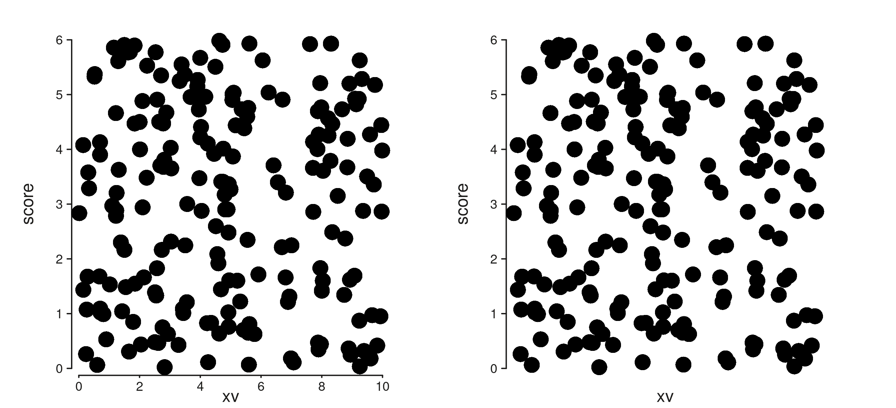
4 & 5 & 6. Smarter axis titles
The default axis title now derives from the first element’s mapping
(falling back to the track’s mapping, then to the seqname when the scale
is genomic). You can override with a plain string label or a styled
aes(label = ..., col = ..., size = ...).
# Element mapping wins over track mapping for the title.
trk_a <- seq_track(data = gr, windows = win) %+%
seq_point(mapping = map(x = xv, y = score))
# Manual override via the convenience .label sub-key.
trk_b <- seq_track(data = gr, windows = win,
mapping = map(x = xv, y = score),
aesthetics = aes("axis.x.title.label" = "Custom title")) %+%
seq_point()
# Or a full styled aes — sets label and any nested style keys at once.
trk_c <- seq_track(
data = gr, windows = win,
mapping = map(x = xv, y = score),
aesthetics = aes(axis.x.title = aes(label = "Styled title",
col = "#A0282C",
size = 1.0))
) %+% seq_point()
(seq_plot() %+% trk_a %+% trk_b %+% trk_c)$plot()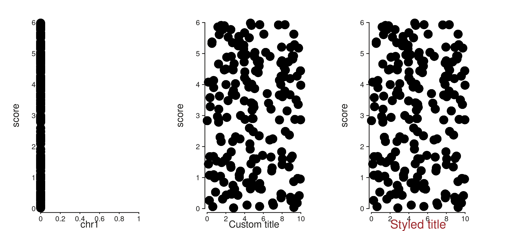
Genomic axes (seq_scale_genomic(), or the auto-built
genomic scale when the user supplies no scale_x) get a
per-window seqname as the default title:
multi_win <- GRanges(
c("chr1", "chr2", "chr3"),
IRanges(start = c(1, 1, 1), end = c(1e6, 1e6, 1e6))
)
multi_data <- GRanges(
rep(c("chr1", "chr2", "chr3"), each = 50),
IRanges(start = c(sample(1:1e6, 50),
sample(1:1e6, 50),
sample(1:1e6, 50)), width = 1)
)
mcols(multi_data)$score <- runif(150, 0, 5)
trk_multi <- seq_track(
data = multi_data, windows = multi_win,
mapping = map(y = score)
) %+% seq_point()
(seq_plot() %+% trk_multi)$plot()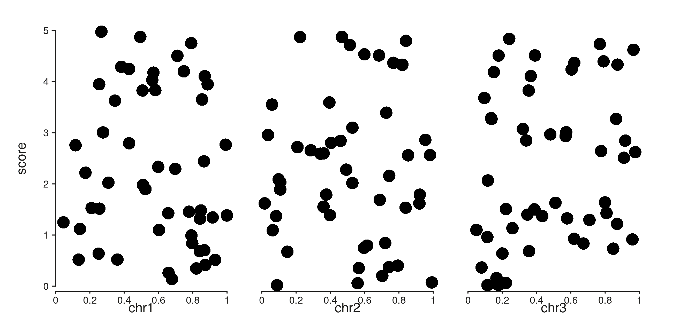
7. pretty = list(...)
All position scales now accept a pretty argument: a
named list of additional arguments forwarded to base
pretty().
trk_default <- seq_track(
data = gr, windows = win,
mapping = map(x = xv, y = score),
scale_x = seq_scale_continuous(limits = c(0, 10)),
aesthetics = aes("axis.x.title.label" = "default n_breaks = 5")
) %+% seq_point()
trk_pretty <- seq_track(
data = gr, windows = win,
mapping = map(x = xv, y = score),
scale_x = seq_scale_continuous(
limits = c(0, 10),
pretty = list(n = 10, min.n = 5)),
aesthetics = aes("axis.x.title.label" = "pretty = list(n = 10, min.n = 5)")
) %+% seq_point()
(seq_plot() %+% trk_default %+% trk_pretty)$plot()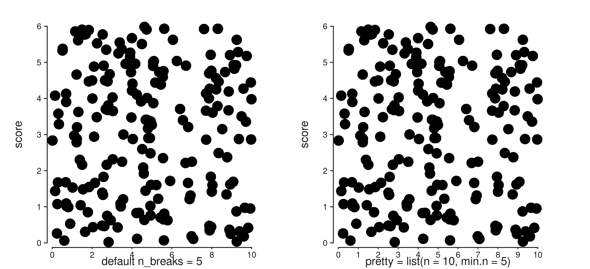
8. Windows inheritance
seq_plot() accepts a windows argument that
any track without its own windows inherits. Genomic scales constructed
without explicit windows inherit from the enclosing track.
This trims boilerplate when many tracks share the same windows.
# Old style — every track repeats the windows.
old <- seq_plot() %+%
(seq_track(data = gr, windows = win,
mapping = map(x = xv, y = score)) %+% seq_point()) %+%
(seq_track(data = gr, windows = win,
mapping = map(x = xv, y = score)) %+% seq_point())
# New style — windows live on the plot.
new <- seq_plot(windows = win) %+%
(seq_track(data = gr,
mapping = map(x = xv, y = score)) %+% seq_point()) %+%
(seq_track(data = gr,
mapping = map(x = xv, y = score)) %+% seq_point())
new$plot()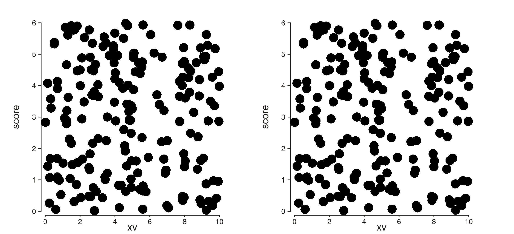
Genomic scales also pick up the enclosing track’s windows when constructed bare:
trk_bare_scale <- seq_track(
data = gr, windows = win,
scale_x = seq_scale_genomic() # no windows arg
) %+% seq_point()
(seq_plot() %+% trk_bare_scale)$plot()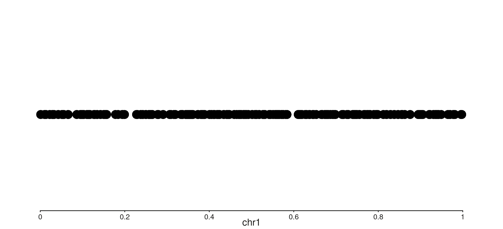
9. plot_margin
seq_plot(plot_margin = 0.02) sets the outermost canvas
margin (in NPC units). The default is 0.02. Per-side
overrides via
aesthetics = aes(margins = list(top = ..., ...)) still
win.
tight <- seq_plot(plot_margin = 0, windows = win) %+%
(seq_track(data = gr,
mapping = map(x = xv, y = score)) %+% seq_point())
roomy <- seq_plot(plot_margin = 0.08, windows = win) %+%
(seq_track(data = gr,
mapping = map(x = xv, y = score)) %+% seq_point())
tight$plot()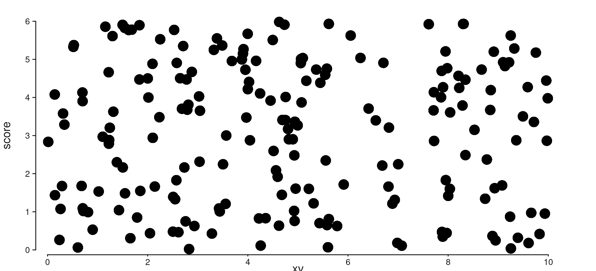
roomy$plot()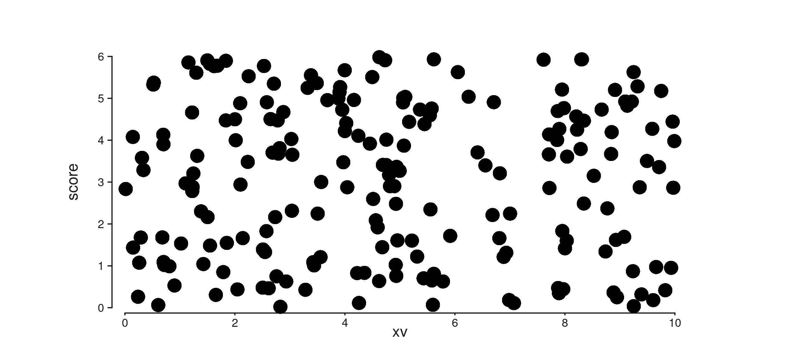
10. highlight_margins — development overlay
A development aid: setting highlight_margins = TRUE
overlays translucent rectangles on every margin band. Useful when tuning
the layout or chasing a stray gap.
highlighted <- seq_plot(windows = win, highlight_margins = TRUE, plot_margin = 0.05) %+%
(seq_track(data = gr,
mapping = map(x = xv, y = score),
track_outer_margin = 0.04,
track_inner_margin = 0.03,
window_outer_margin = 0.02,
window_inner_margin = 0.02) %+%
seq_point())
highlighted$plot()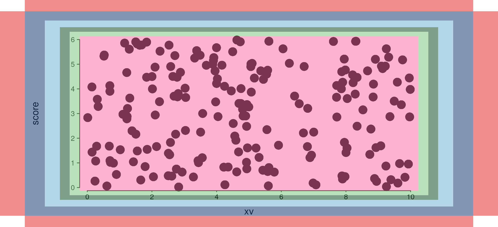
Colours:
| Region | Colour |
|---|---|
plot_margin |
red |
track_outer_margin |
dark blue |
track_inner_margin |
light blue |
window_outer_margin |
dark green |
window_inner_margin |
light green |
plotting area (inner) |
pink |
All drawn at alpha = 0.5.
11. Hi-C fetcher: multi-range and 280 Mb default
open_hic()$fetch() now takes a single
region GRanges that may contain multiple ranges; each range
produces its own intra-region contact submatrix, and the results are
concatenated into a single BEDPE data frame. The previous
region1 / region2 interface is replaced.
The max_fetch_bp default has been raised from 5 Mb to
280 Mb so whole-chromosome fetches work out of the box;
the check now applies per range rather than to the sum.
hic <- open_hic("path/to/file.hic", resolution = 25000L)
# Single range — same as before, but uses the new arg name.
hic$fetch(GRanges("chr14", IRanges(98e6, 99e6)))
# Multi-range fetch in one call.
multi_regions <- GRanges(
c("chr14", "chr15"),
IRanges(start = c(98e6, 50e6), end = c(99e6, 51e6))
)
hic$fetch(multi_regions)Each row in the returned data frame carries the seqname of the range
that produced it (seqnames1/seqnames2), so
downstream code can still distinguish per-region contacts.
Putting it together
A small showcase that uses several of the new features in one plot:
showcase <- seq_plot(windows = multi_win, plot_margin = 0.03) %+%
(seq_track(
data = multi_data,
mapping = map(y = score),
aesthetics = aes(axis.x.title = aes(label = "Position",
col = "#3D4D58"))
) %+% seq_point()) %+%
(seq_track(
data = multi_data,
mapping = map(x = start, y = score),
scale_y = seq_scale_continuous(limits = c(0, 4),
expand = c(0.05, 0),
oob = "exclude",
pretty = list(n = 4))
) %+% seq_path())
showcase$plot()
#> 7 out-of-bounds data points excluded! (seq_path)
#> 9 out-of-bounds data points excluded! (seq_path)
#> 9 out-of-bounds data points excluded! (seq_path)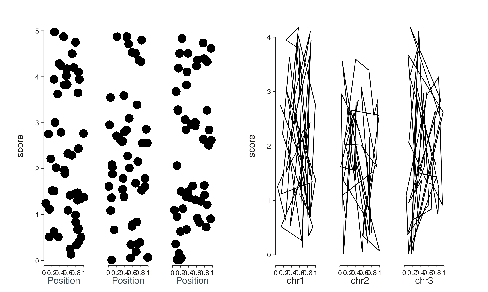